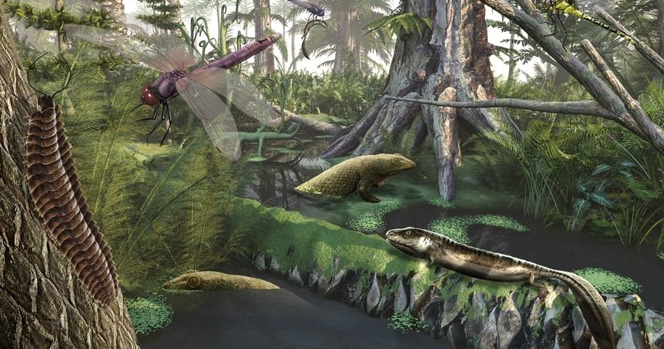

El Silúrico es el tercer sistema y período del Paleozoico en la escala temporal geológica. Sucede al Ordovícico y antecede al Devónico. Duró unos 23 millones de años, comenzando hace unos 443 millones de años y terminando hace unos 420 millones de años. Debe su nombre a la tribu celta de los siluros, que vivieron en el sur de Gales, lugar donde el geólogo escocés Roderick Murchison identificó este sistema en 1831.
Se caracteriza porque el nivel de los océanos era elevado, con lo que existe un amplio registro de sedimentos marinos en todos los continentes. Amplios mares epicontinentales someros se extendían en la zona tropical. Aparecen los placodermos, los tiburones espinosos y los peces cartilaginosos. Las plantas terrestres se encontraban restringidas a ambientes palustres. En algunas zonas se forman yacimientos de petróleo y gas.
Ocurrieron importantes acontecimientos orogénicos (como la unión Laurentia-Báltica con Avalonia):
Orogenia Caledónica en el noroeste de Europa.
Orogenia Acadiense de los Apalaches, en América del Norte.
Emersión de amplias áreas terrestres.